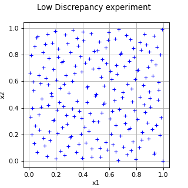

LowDiscrepancyExperiment¶
(Source code, png)

- class LowDiscrepancyExperiment(*args)¶
LowDiscrepancy experiment.
- Available constructors:
LowDiscrepancyExperiment(size, restart)
LowDiscrepancyExperiment(sequence, size, restart)
LowDiscrepancyExperiment(sequence, distribution, size, restart)
- Parameters:
- sizepositive int
Number
 of points of the sequence.
of points of the sequence.- sequence
LowDiscrepancySequence Sequence of points
 with low discrepancy.
If not specified, the sequence is a
with low discrepancy.
If not specified, the sequence is a SobolSequence.- distribution
Distribution Distribution
 of dimension
of dimension  .
The low discrepancy sequence is uniformly
distributed over
.
The low discrepancy sequence is uniformly
distributed over ![[0,1]^n]() . We use an iso-probabilistic transformation
from the independent copula of dimension to the given distribution.
The weights are all equal to
. We use an iso-probabilistic transformation
from the independent copula of dimension to the given distribution.
The weights are all equal to  .
.- restartbool
Flag to tell if the low discrepancy sequence must be restarted from its initial state at each change of distribution or not. Default is True: the sequence is restarted at each change of distribution.
See also
Notes
The
generate()method generates points according to the distribution . When the
according to the distribution . When the generate()method is called again, the generated sample changes. In case of dependent marginals, the approach based on [cambou2017] is used.Examples
>>> import openturns as ot >>> distribution = ot.ComposedDistribution([ot.Uniform(0.0, 1.0)] * 2)
Generate the sample with a reinitialization of the sequence at each change of distribution:
>>> experiment = ot.LowDiscrepancyExperiment(ot.SobolSequence(), distribution, 5, True) >>> print(experiment.generate()) [ y0 y1 ] 0 : [ 0.5 0.5 ] 1 : [ 0.75 0.25 ] 2 : [ 0.25 0.75 ] 3 : [ 0.375 0.375 ] 4 : [ 0.875 0.875 ] >>> print(experiment.generate()) [ y0 y1 ] 0 : [ 0.625 0.125 ] 1 : [ 0.125 0.625 ] 2 : [ 0.1875 0.3125 ] 3 : [ 0.6875 0.8125 ] 4 : [ 0.9375 0.0625 ] >>> experiment.setDistribution(distribution) >>> print(experiment.generate()) [ y0 y1 ] 0 : [ 0.5 0.5 ] 1 : [ 0.75 0.25 ] 2 : [ 0.25 0.75 ] 3 : [ 0.375 0.375 ] 4 : [ 0.875 0.875 ]
Generate the sample keeping the previous state of the sequence at each change of distribution:
>>> experiment = ot.LowDiscrepancyExperiment(ot.SobolSequence(), distribution, 5, False) >>> print(experiment.generate()) [ y0 y1 ] 0 : [ 0.5 0.5 ] 1 : [ 0.75 0.25 ] 2 : [ 0.25 0.75 ] 3 : [ 0.375 0.375 ] 4 : [ 0.875 0.875 ] >>> print(experiment.generate()) [ y0 y1 ] 0 : [ 0.625 0.125 ] 1 : [ 0.125 0.625 ] 2 : [ 0.1875 0.3125 ] 3 : [ 0.6875 0.8125 ] 4 : [ 0.9375 0.0625 ] >>> experiment.setDistribution(distribution) >>> print(experiment.generate()) [ y0 y1 ] 0 : [ 0.4375 0.5625 ] 1 : [ 0.3125 0.1875 ] 2 : [ 0.8125 0.6875 ] 3 : [ 0.5625 0.4375 ] 4 : [ 0.0625 0.9375 ]
Generate a sample according to a distribution with dependent marginals:
>>> distribution = ot.Normal([0.0]*2, ot.CovarianceMatrix(2, [4.0, 1.0, 1.0, 9.0])) >>> experiment = ot.LowDiscrepancyExperiment(ot.SobolSequence(), distribution, 5, False) >>> print(experiment.generate()) [ y0 y1 ] 0 : [ 0 0 ] 1 : [ 1.34898 -1.65792 ] 2 : [ -1.34898 1.65792 ] 3 : [ -0.637279 -1.10187 ] 4 : [ 2.3007 3.97795 ]
Methods
generate()Generate points according to the type of the experiment.
Generate points and their associated weight according to the type of the experiment.
Accessor to the object's name.
Accessor to the distribution.
getId()Accessor to the object's id.
getName()Accessor to the object's name.
Return the value of the randomize flag.
Return the value of the restart flag.
Return the sequence.
Accessor to the object's shadowed id.
getSize()Accessor to the size of the generated sample.
Accessor to the object's visibility state.
hasName()Test if the object is named.
Ask whether the experiment has uniform weights.
Test if the object has a distinguishable name.
isRandom()Accessor to the randomness of quadrature.
setDistribution(distribution)Accessor to the distribution.
setName(name)Accessor to the object's name.
setRandomize(randomize)Set the value of the randomize flag.
setRestart(restart)Set the value of the restart flag.
setShadowedId(id)Accessor to the object's shadowed id.
setSize(size)Accessor to the size of the generated sample.
setVisibility(visible)Accessor to the object's visibility state.
- __init__(*args)¶
- generate()¶
Generate points according to the type of the experiment.
- Returns:
- sample
Sample Points
which constitute the design of experiments
with  . The sampling method is defined by the nature of
the weighted experiment.
. The sampling method is defined by the nature of
the weighted experiment.
- sample
Examples
>>> import openturns as ot >>> ot.RandomGenerator.SetSeed(0) >>> myExperiment = ot.MonteCarloExperiment(ot.Normal(2), 5) >>> sample = myExperiment.generate() >>> print(sample) [ X0 X1 ] 0 : [ 0.608202 -1.26617 ] 1 : [ -0.438266 1.20548 ] 2 : [ -2.18139 0.350042 ] 3 : [ -0.355007 1.43725 ] 4 : [ 0.810668 0.793156 ]
- generateWithWeights()¶
Generate points and their associated weight according to the type of the experiment.
- Returns:
Examples
>>> import openturns as ot >>> ot.RandomGenerator.SetSeed(0) >>> myExperiment = ot.MonteCarloExperiment(ot.Normal(2), 5) >>> sample, weights = myExperiment.generateWithWeights() >>> print(sample) [ X0 X1 ] 0 : [ 0.608202 -1.26617 ] 1 : [ -0.438266 1.20548 ] 2 : [ -2.18139 0.350042 ] 3 : [ -0.355007 1.43725 ] 4 : [ 0.810668 0.793156 ] >>> print(weights) [0.2,0.2,0.2,0.2,0.2]
- getClassName()¶
Accessor to the object’s name.
- Returns:
- class_namestr
The object class name (object.__class__.__name__).
- getDistribution()¶
Accessor to the distribution.
- Returns:
- distribution
Distribution Distribution used to generate the set of input data.
- distribution
- getId()¶
Accessor to the object’s id.
- Returns:
- idint
Internal unique identifier.
- getName()¶
Accessor to the object’s name.
- Returns:
- namestr
The name of the object.
- getRandomize()¶
Return the value of the randomize flag.
- Returns:
- randomizebool
The value of the randomize flag.
- getRestart()¶
Return the value of the restart flag.
- Returns:
- restartbool
The value of the restart flag.
- getSequence()¶
Return the sequence.
- Returns:
- sequence
LowDiscrepancySequence Sequence of points
with low discrepancy.
- sequence
- getShadowedId()¶
Accessor to the object’s shadowed id.
- Returns:
- idint
Internal unique identifier.
- getSize()¶
Accessor to the size of the generated sample.
- Returns:
- sizepositive int
Number
 of points constituting the design of experiments.
of points constituting the design of experiments.
- getVisibility()¶
Accessor to the object’s visibility state.
- Returns:
- visiblebool
Visibility flag.
- hasName()¶
Test if the object is named.
- Returns:
- hasNamebool
True if the name is not empty.
- hasUniformWeights()¶
Ask whether the experiment has uniform weights.
- Returns:
- hasUniformWeightsbool
Whether the experiment has uniform weights.
- hasVisibleName()¶
Test if the object has a distinguishable name.
- Returns:
- hasVisibleNamebool
True if the name is not empty and not the default one.
- isRandom()¶
Accessor to the randomness of quadrature.
- Parameters:
- isRandombool
Is true if the design of experiments is random. Otherwise, the design of experiment is assumed to be deterministic.
- setDistribution(distribution)¶
Accessor to the distribution.
- Parameters:
- distribution
Distribution Distribution used to generate the set of input data.
- distribution
- setName(name)¶
Accessor to the object’s name.
- Parameters:
- namestr
The name of the object.
- setRandomize(randomize)¶
Set the value of the randomize flag.
- Parameters:
- randomizebool
Use a cyclic scrambling of the low discrepancy sequence, it means, the whole low discrepancy sequence is translated by a random vector modulo 1. See [lecuyer2005] for the interest of such a scrambling. Default is False.
- setRestart(restart)¶
Set the value of the restart flag.
- Parameters:
- restartbool
The value of the restart flag. If equals to True, the low discrepancy sequence is restarted at each change of distribution, else it is changed only if the new distribution has a dimension different from the current one.
- setShadowedId(id)¶
Accessor to the object’s shadowed id.
- Parameters:
- idint
Internal unique identifier.
- setSize(size)¶
Accessor to the size of the generated sample.
- Parameters:
- sizepositive int
Number
of points constituting the design of experiments.
- setVisibility(visible)¶
Accessor to the object’s visibility state.
- Parameters:
- visiblebool
Visibility flag.
 associated with the points. By default,
all the weights are equal to
associated with the points. By default,
all the weights are equal to  .
.Examples using the class¶

Create a polynomial chaos metamodel by integration on the cantilever beam


{kind=link}